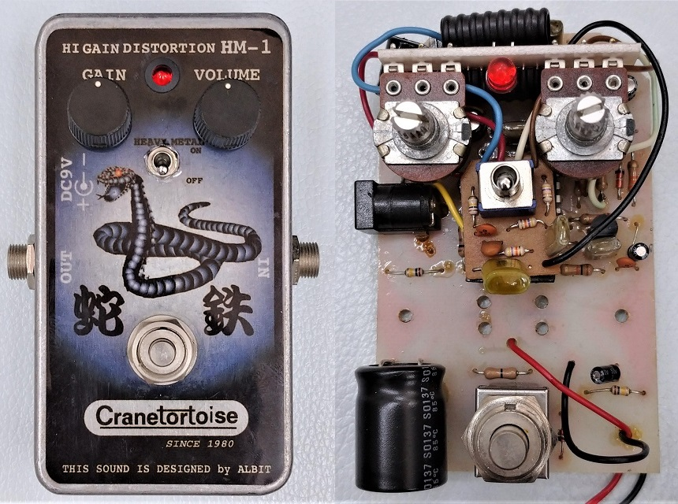
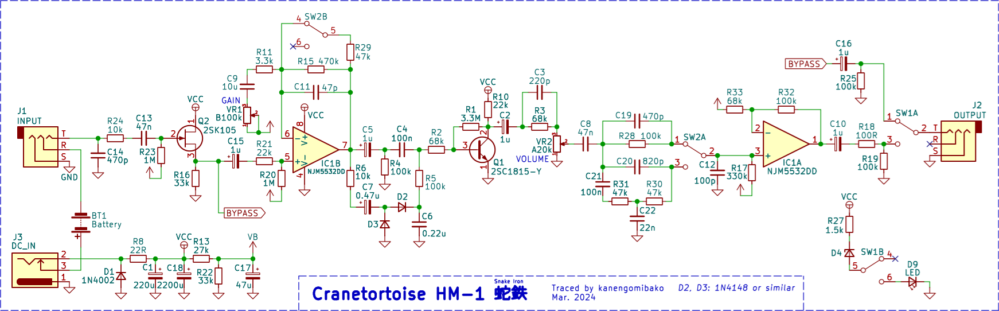
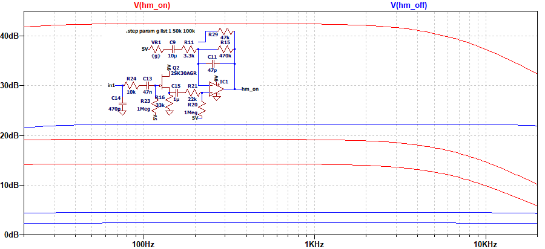
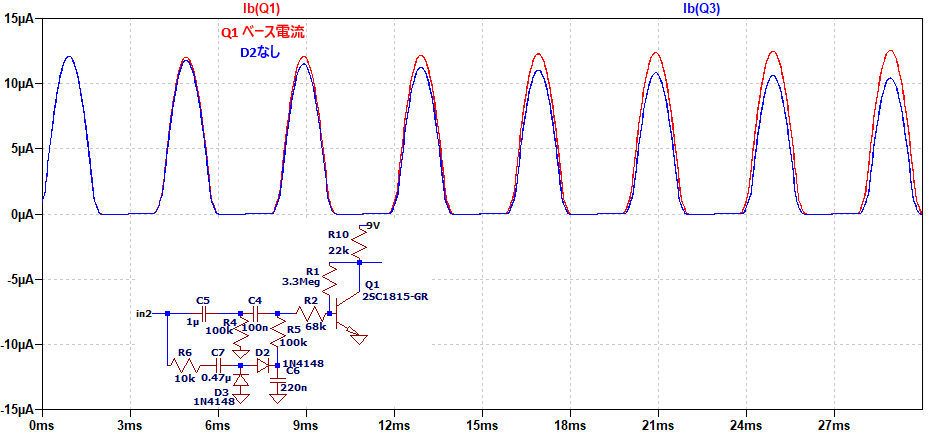
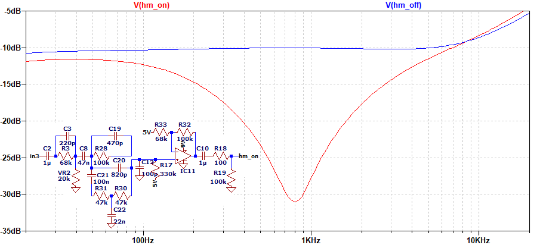

Cranetortoise HM-1 蛇鉄 解析
2024年06月15日 カテゴリー：修理・改造・解析

中古でCranetortoise HM-1 蛇鉄を入手しました。ノブがなかったので手持ちのものを取り付けています。ジャンク扱いでしたが動作に問題はないようで、そのまま解析しました。KiCadデータ（基板画像入り）とLTspiceの回路図データはGitHubにあります。
▽回路図

バッファードバイパスで、電源部の大きなコンデンサが目立ちます。公式の説明書（PDF）には、「新開発のオリジナル回路である"HEAVY METAL ACTIVE CIRCUIT"の搭載で、ラウドロックに最適なハイとローを強調したサウンドと、ライブで活躍するクランチサウンドが、HEAVY METAL SWで、2系統のドライブサウンドを選択出来ます。」と記載があります。
▽シミュレーション
- GAIN 0% → 50% → 100%

HEAVY METALスイッチオンでゲインが上がります。低音域がほとんどカットされていません。
- Q1周辺
トランジスタQ1の前段でダイオードクリッピングが起こっていますが、R5が100kΩと大きい値なので、音色には影響がないように見えます。ただ、ピッキング後にD2の経路からC6が充電されることで、Q1のベース電流が増加しているのが確認できました。

これによりQ1での歪み方が変化しますが、もしかすると何か別の意図があるのかもしれません。
- トーン調整

トーンコントロールはありませんが、HEAVY METALスイッチオンで中音域がカットされドンシャリな特性となります。